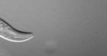

C. elegans is a very lovely, good-looking, and diligent round worm, works with me day to day. We've built wonderful friendships.

It is a super powerful biological model animal that serves the community for decades. Anyone can employ almost all cutting-edge techniques including genetic, cytological, biochemical....and all the way to the modern live-imaging and genome-scale approaches with it.
Working with animals is different from working with tissue culture or pure macromolecules. C. elegans has short life-span, produces progeny by selfing or crossing, and is transparent - all these advantages make it an incredibly useful organism among all model systems.
Besides, of course, it is a great organism for studying meiosis - half of the animal is costituted by germ cells, and they distribute in a spatio-temporal manner in the gonad! Amazing! :)